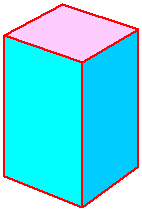
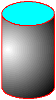
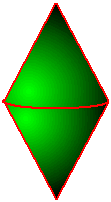
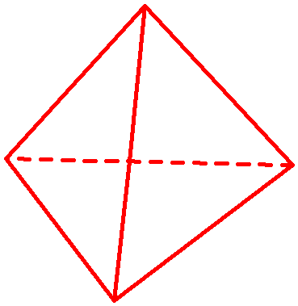
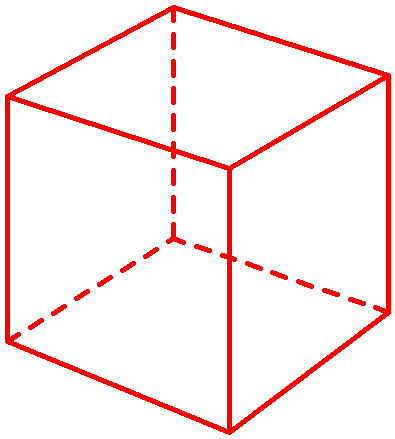
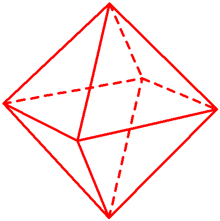
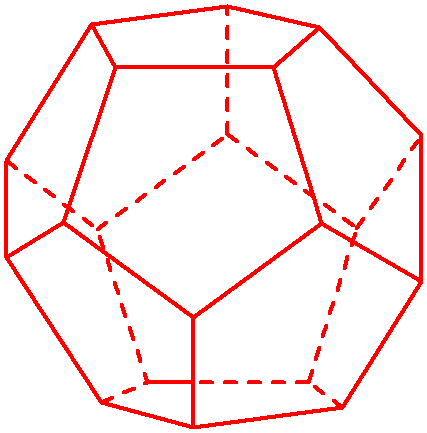
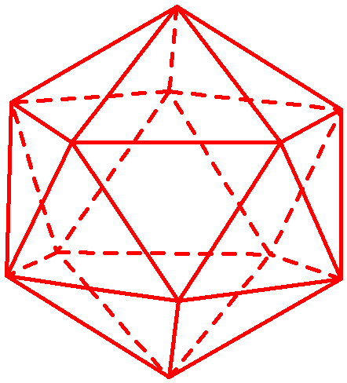

<html xmlns:v="urn:schemas-microsoft-com:vml"
xmlns:o="urn:schemas-microsoft-com:office:office"
xmlns:w="urn:schemas-microsoft-com:office:word"
xmlns="http://www.w3.org/TR/REC-html40">

<head>
<meta http-equiv=Content-Type content="text/html; charset=windows-1250">
<meta name=ProgId content=Word.Document>
<meta name=Generator content="Microsoft Word 10">
<meta name=Originator content="Microsoft Word 10">
<link rel=File-List href="tes_elemei/filelist.xml">
<link rel=Edit-Time-Data href="tes_elemei/editdata.mso">
<link rel=OLE-Object-Data href="tes_elemei/oledata.mso">
<!--[if !mso]>
<style>
v\:* {behavior:url(#default#VML);}
o\:* {behavior:url(#default#VML);}
w\:* {behavior:url(#default#VML);}
.shape {behavior:url(#default#VML);}
</style>
<![endif]-->
<title>HALMAZOK</title>
<!--[if gte mso 9]><xml>
 <o:DocumentProperties>
  <o:Author>PL</o:Author>
  <o:Template>Normal</o:Template>
  <o:LastAuthor>Pleszkán László</o:LastAuthor>
  <o:Revision>2</o:Revision>
  <o:TotalTime>211</o:TotalTime>
  <o:Created>2008-06-17T15:04:00Z</o:Created>
  <o:LastSaved>2008-06-17T15:04:00Z</o:LastSaved>
  <o:Pages>1</o:Pages>
  <o:Words>194</o:Words>
  <o:Characters>1341</o:Characters>
  <o:Company>PLESZI</o:Company>
  <o:Lines>11</o:Lines>
  <o:Paragraphs>3</o:Paragraphs>
  <o:CharactersWithSpaces>1532</o:CharactersWithSpaces>
  <o:Version>10.2625</o:Version>
 </o:DocumentProperties>
</xml><![endif]--><!--[if gte mso 9]><xml>
 <w:WordDocument>
  <w:Zoom>90</w:Zoom>
  <w:SpellingState>Clean</w:SpellingState>
  <w:GrammarState>Clean</w:GrammarState>
  <w:HyphenationZone>21</w:HyphenationZone>
  <w:BrowserLevel>MicrosoftInternetExplorer4</w:BrowserLevel>
  <w:ValidateAgainstSchemas/>
  <w:SaveIfXMLInvalid>false</w:SaveIfXMLInvalid>
  <w:IgnoreMixedContent>false</w:IgnoreMixedContent>
  <w:AlwaysShowPlaceholderText>false</w:AlwaysShowPlaceholderText>
 </w:WordDocument>
</xml><![endif]-->
<style>
<!--
 /* Style Definitions */
 p.MsoNormal, li.MsoNormal, div.MsoNormal
	{mso-style-parent:"";
	margin:0cm;
	margin-bottom:.0001pt;
	mso-pagination:widow-orphan;
	font-size:12.0pt;
	font-family:"Times New Roman";
	mso-fareast-font-family:"Times New Roman";}
a:link, span.MsoHyperlink
	{color:blue;
	text-decoration:underline;
	text-underline:single;}
a:visited, span.MsoHyperlinkFollowed
	{color:blue;
	text-decoration:underline;
	text-underline:single;}
pre
	{margin:0cm;
	margin-bottom:.0001pt;
	mso-pagination:widow-orphan;
	font-size:10.0pt;
	font-family:"Courier New";
	mso-fareast-font-family:"Times New Roman";}
span.SpellE
	{mso-style-name:"";
	mso-spl-e:yes;}
span.GramE
	{mso-style-name:"";
	mso-gram-e:yes;}
@page Section1
	{size:595.3pt 841.9pt;
	margin:70.85pt 70.85pt 70.85pt 70.85pt;
	mso-header-margin:35.4pt;
	mso-footer-margin:35.4pt;
	mso-paper-source:0;}
div.Section1
	{page:Section1;}
-->
</style>
<!--[if gte mso 10]>
<style>
 /* Style Definitions */
 table.MsoNormalTable
	{mso-style-name:"Normál táblázat";
	mso-tstyle-rowband-size:0;
	mso-tstyle-colband-size:0;
	mso-style-noshow:yes;
	mso-style-parent:"";
	mso-padding-alt:0cm 5.4pt 0cm 5.4pt;
	mso-para-margin:0cm;
	mso-para-margin-bottom:.0001pt;
	mso-pagination:widow-orphan;
	font-size:10.0pt;
	font-family:"Times New Roman";}
table.MsoTableGrid
	{mso-style-name:"Rácsos táblázat";
	mso-tstyle-rowband-size:0;
	mso-tstyle-colband-size:0;
	border:solid windowtext 1.0pt;
	mso-border-alt:solid windowtext .5pt;
	mso-padding-alt:0cm 5.4pt 0cm 5.4pt;
	mso-border-insideh:.5pt solid windowtext;
	mso-border-insidev:.5pt solid windowtext;
	mso-para-margin:0cm;
	mso-para-margin-bottom:.0001pt;
	mso-pagination:widow-orphan;
	font-size:10.0pt;
	font-family:"Times New Roman";}
</style>
<![endif]--><!--[if gte mso 9]><xml>
 <w:LatentStyles DefLockedState="false" LatentStyleCount="156">  </w:LatentStyles>
</xml><![endif]--><!--[if gte mso 9]><xml>
 <o:shapedefaults v:ext="edit" spidmax="21506">
  <o:colormru v:ext="edit" colors="#090,#eaeaea"/>
  <o:colormenu v:ext="edit" fillcolor="#eaeaea"/>
 </o:shapedefaults></xml><![endif]--><!--[if gte mso 9]><xml>
 <o:shapelayout v:ext="edit">
  <o:idmap v:ext="edit" data="1"/>
 </o:shapelayout></xml><![endif]-->
</head>

<body bgcolor="#EAEAEA" lang=HU link=blue vlink=blue style='tab-interval:35.45pt'>

<div class=Section1>

<div align=center>

<table class=MsoTableGrid border=0 cellspacing=0 cellpadding=0 width=662
 style='width:496.15pt;border-collapse:collapse;mso-yfti-tbllook:480;
 mso-padding-alt:0cm 5.4pt 0cm 5.4pt'>
 <tr style='mso-yfti-irow:0;height:12.4pt;mso-yfti-firstrow:yes'>
  <td colspan=3 valign=top style='padding:0cm 5.4pt 0cm 5.4pt;height:12.4pt'><pre
  style='margin-left:76.6pt'><b style='mso-bidi-font-weight:normal'><span
  style='font-size:12.0pt;font-family:Arial'><o:p>&nbsp;</o:p></span></b></pre></td>
 </tr>
 <tr style='mso-yfti-irow:1;height:12.4pt'>
  <td colspan=3 valign=top style='padding:0cm 5.4pt 0cm 5.4pt;height:12.4pt'>
  <p class=MsoNormal align=center style='text-align:center;tab-stops:35.45pt'><b
  style='mso-bidi-font-weight:normal'><span style='font-family:Arial'><o:p>&nbsp;</o:p></span></b></p>
  </td>
 </tr>
 <tr style='mso-yfti-irow:2;height:2.35pt'>
  <td colspan=3 valign=top style='padding:0cm 5.4pt 0cm 5.4pt;height:2.35pt'>
  <p class=MsoNormal style='text-align:justify;tab-stops:35.45pt'><b
  style='mso-bidi-font-weight:normal'><span style='font-family:Arial;
  color:black'><span style='mso-spacerun:yes'>   </span>Ha testrõl beszélünk,
  akkor a térnek felületekkel körülhatárolt részére gondolunk. Matematikában
  úgy képzeljük el, hogy ezeknek a határoló felületeknek nincs vastagságuk.<o:p></o:p></span></b></p>
  <p class=MsoNormal style='margin-top:6.0pt;margin-right:0cm;margin-bottom:
  0cm;margin-left:58.6pt;margin-bottom:.0001pt;tab-stops:35.45pt'><b
  style='mso-bidi-font-weight:normal'><span style='font-family:Arial;
  color:black'>Vannak testek, amelyeket<o:p></o:p></span></b></p>
  <p class=MsoNormal style='margin-left:130.6pt;tab-stops:35.45pt'><b
  style='mso-bidi-font-weight:normal'><span style='font-family:Arial'>— csak
  síkfelületek (lapok) határolnak.<o:p></o:p></span></b></p>
  <p class=MsoNormal style='margin-left:130.6pt;tab-stops:35.45pt'><b
  style='mso-bidi-font-weight:normal'><span style='font-family:Arial'>—
  síklapok és görbe felületek határolnak.<o:p></o:p></span></b></p>
  <p class=MsoNormal style='margin-left:130.6pt;tab-stops:35.45pt'><b
  style='mso-bidi-font-weight:normal'><span style='font-family:Arial'>— csak
  görbe felületek határolnak.<o:p></o:p></span></b></p>
  <p class=MsoNormal style='margin-top:6.0pt;text-align:justify;tab-stops:35.45pt'><b
  style='mso-bidi-font-weight:normal'><span style='font-family:Arial'><span
  style='mso-spacerun:yes'>   </span><span style='color:black'><o:p></o:p></span></span></b></p>
  </td>
 </tr>
 <tr style='mso-yfti-irow:3;height:2.35pt'>
  <td colspan=3 valign=top style='background:#00CCFF;padding:0cm 5.4pt 0cm 5.4pt;
  height:2.35pt'>
  <p class=MsoNormal align=center style='text-align:center;tab-stops:35.45pt'><b
  style='mso-bidi-font-weight:normal'><span style='font-size:8.0pt;font-family:
  Arial;color:black'><o:p>&nbsp;</o:p></span></b></p>
  </td>
 </tr>
 <tr style='mso-yfti-irow:4;height:2.35pt'>
  <td valign=top style='background:#00CCFF;padding:0cm 5.4pt 0cm 5.4pt;
  height:2.35pt'>
  <p class=MsoNormal align=center style='text-align:center;tab-stops:35.45pt'><!--[if gte vml 1]><v:shapetype
   id="_x0000_t75" coordsize="21600,21600" o:spt="75" o:preferrelative="t"
   path="m@4@5l@4@11@9@11@9@5xe" filled="f" stroked="f">
   <v:stroke joinstyle="miter"/>
   <v:formulas>
    <v:f eqn="if lineDrawn pixelLineWidth 0"/>
    <v:f eqn="sum @0 1 0"/>
    <v:f eqn="sum 0 0 @1"/>
    <v:f eqn="prod @2 1 2"/>
    <v:f eqn="prod @3 21600 pixelWidth"/>
    <v:f eqn="prod @3 21600 pixelHeight"/>
    <v:f eqn="sum @0 0 1"/>
    <v:f eqn="prod @6 1 2"/>
    <v:f eqn="prod @7 21600 pixelWidth"/>
    <v:f eqn="sum @8 21600 0"/>
    <v:f eqn="prod @7 21600 pixelHeight"/>
    <v:f eqn="sum @10 21600 0"/>
   </v:formulas>
   <v:path o:extrusionok="f" gradientshapeok="t" o:connecttype="rect"/>
   <o:lock v:ext="edit" aspectratio="t"/>
  </v:shapetype><v:shape id="_x0000_i1025" type="#_x0000_t75" style='width:106.5pt;
   height:158.25pt' o:ole="">
   <v:imagedata src="tes_elemei/image001.wmz" o:title=""/>
  </v:shape><![endif]--><![if !vml]><![endif]><!--[if gte mso 9]><xml>
   <o:OLEObject Type="Embed" ProgID="Flash.Movie" ShapeID="_x0000_i1025"
    DrawAspect="Content" ObjectID="_1275227447">
   </o:OLEObject>
  </xml><![endif]--><b style='mso-bidi-font-weight:normal'><span
  style='font-family:Arial;color:black'><o:p></o:p></span></b></p>
  </td>
  <td valign=top style='background:#00CCFF;padding:0cm 5.4pt 0cm 5.4pt;
  height:2.35pt'>
  <p class=MsoNormal align=center style='text-align:center;tab-stops:35.45pt'><!--[if gte vml 1]><v:shape
   id="_x0000_i1026" type="#_x0000_t75" style='width:87.75pt;height:154.5pt'
   o:ole="">
   <v:imagedata src="tes_elemei/image003.wmz" o:title=""/>
  </v:shape><![endif]--><![if !vml]><![endif]><!--[if gte mso 9]><xml>
   <o:OLEObject Type="Embed" ProgID="Flash.Movie" ShapeID="_x0000_i1026"
    DrawAspect="Content" ObjectID="_1275227448">
   </o:OLEObject>
  </xml><![endif]--><b style='mso-bidi-font-weight:normal'><span
  style='font-family:Arial;color:black'><o:p></o:p></span></b></p>
  </td>
  <td valign=top style='background:#00CCFF;padding:0cm 5.4pt 0cm 5.4pt;
  height:2.35pt'>
  <p class=MsoNormal align=center style='text-align:center;tab-stops:35.45pt'><!--[if gte vml 1]><v:shape
   id="_x0000_i1027" type="#_x0000_t75" style='width:83.25pt;height:151.5pt'
   o:ole="">
   <v:imagedata src="tes_elemei/image005.wmz" o:title=""/>
  </v:shape><![endif]--><![if !vml]><![endif]><!--[if gte mso 9]><xml>
   <o:OLEObject Type="Embed" ProgID="Flash.Movie" ShapeID="_x0000_i1027"
    DrawAspect="Content" ObjectID="_1275227449">
   </o:OLEObject>
  </xml><![endif]--><b style='mso-bidi-font-weight:normal'><span
  style='font-family:Arial;color:black'><o:p></o:p></span></b></p>
  </td>
 </tr>
 <tr style='mso-yfti-irow:5;height:2.35pt'>
  <td colspan=3 valign=top style='background:#00CCFF;padding:0cm 5.4pt 0cm 5.4pt;
  height:2.35pt'>
  <p class=MsoNormal align=center style='text-align:center;tab-stops:35.45pt'><b
  style='mso-bidi-font-weight:normal'><span style='font-size:8.0pt;font-family:
  Arial'><o:p>&nbsp;</o:p></span></b></p>
  </td>
 </tr>
 <tr style='mso-yfti-irow:6;height:2.35pt'>
  <td valign=top style='padding:0cm 5.4pt 0cm 5.4pt;height:2.35pt'>
  <p class=MsoNormal align=center style='text-align:center;tab-stops:35.45pt'><b
  style='mso-bidi-font-weight:normal'><span style='font-family:Arial'>Csak
  síkfelületek által határolt test<o:p></o:p></span></b></p>
  </td>
  <td valign=top style='padding:0cm 5.4pt 0cm 5.4pt;height:2.35pt'>
  <p class=MsoNormal align=center style='text-align:center;tab-stops:35.45pt'><b
  style='mso-bidi-font-weight:normal'><span style='font-family:Arial'>Sík- és görbefelületek
  által határolt test<o:p></o:p></span></b></p>
  </td>
  <td valign=top style='padding:0cm 5.4pt 0cm 5.4pt;height:2.35pt'>
  <p class=MsoNormal align=center style='text-align:center;tab-stops:35.45pt'><b
  style='mso-bidi-font-weight:normal'><span style='font-family:Arial'>Csak
  görbefelületek által határolt test<o:p></o:p></span></b></p>
  </td>
 </tr>
 <tr style='mso-yfti-irow:7;height:2.35pt'>
  <td valign=top style='padding:0cm 5.4pt 0cm 5.4pt;height:2.35pt'>
  <p class=MsoNormal align=center style='text-align:center;tab-stops:35.45pt'><b
  style='mso-bidi-font-weight:normal'><span style='font-family:Arial'><o:p>&nbsp;</o:p></span></b></p>
  </td>
  <td valign=top style='padding:0cm 5.4pt 0cm 5.4pt;height:2.35pt'>
  <p class=MsoNormal align=center style='text-align:center;tab-stops:35.45pt'><b
  style='mso-bidi-font-weight:normal'><span style='font-family:Arial'><o:p>&nbsp;</o:p></span></b></p>
  </td>
  <td valign=top style='padding:0cm 5.4pt 0cm 5.4pt;height:2.35pt'>
  <p class=MsoNormal align=center style='text-align:center;tab-stops:35.45pt'><b
  style='mso-bidi-font-weight:normal'><span style='font-family:Arial'><o:p>&nbsp;</o:p></span></b></p>
  </td>
 </tr>
 <tr style='mso-yfti-irow:8;height:2.35pt'>
  <td colspan=3 valign=top style='padding:0cm 5.4pt 0cm 5.4pt;height:2.35pt'>
  <p class=MsoNormal style='text-align:justify;tab-stops:35.45pt'><b
  style='mso-bidi-font-weight:normal'><span style='font-family:Arial'>A testet
  határoló síklapok a test <span style='color:#993300'>lap</span>jai. A
  síklapok találkozását <span style='color:#993300'>él</span>nek, az élek
  találkozását <span style='color:#993300'>csúcs</span>nak nevezzük.<o:p></o:p></span></b></p>
  <p class=MsoNormal style='tab-stops:35.45pt'><b style='mso-bidi-font-weight:
  normal'><span style='font-family:Arial'><o:p>&nbsp;</o:p></span></b></p>
  <p class=MsoNormal style='text-align:justify;tab-stops:35.45pt'><b
  style='mso-bidi-font-weight:normal'><span style='font-family:Arial'><span
  style='mso-spacerun:yes'>   </span>A geometriában a testeknek csak a méretüket
  és az alakjukat vizsgáljuk.<o:p></o:p></span></b></p>
  <p class=MsoNormal style='margin-top:6.0pt;tab-stops:35.45pt'><b
  style='mso-bidi-font-weight:normal'><span style='font-family:Arial;
  color:#993300'>A test felszíne</span></b><b style='mso-bidi-font-weight:normal'><span
  style='font-family:Arial'>: a test határoló felületének a területe.<o:p></o:p></span></b></p>
  <p class=MsoNormal style='margin-left:31.6pt;text-align:justify;tab-stops:
  35.45pt'><b style='mso-bidi-font-weight:normal'><span style='font-family:
  Arial'>A felszín jele a képletekben: A.<span style='mso-spacerun:yes'> 
  </span>A felszín mérésekor területet (a határoló felület nagyságát) mérünk.<o:p></o:p></span></b></p>
  <p class=MsoNormal style='margin-top:6.0pt;tab-stops:35.45pt'><b
  style='mso-bidi-font-weight:normal'><span style='font-family:Arial;
  color:#993300'>A test térfogata:</span></b><b style='mso-bidi-font-weight:
  normal'><span style='font-family:Arial'> a körülhatárolt térrész nagyságát
  jellemzi<span class=GramE>..</span><o:p></o:p></span></b></p>
  <p class=MsoNormal align=center style='text-align:center;tab-stops:35.45pt'><b
  style='mso-bidi-font-weight:normal'><span style='font-family:Arial'>A
  térfogat jele a képletekben: V<o:p></o:p></span></b></p>
  </td>
 </tr>
 <tr style='mso-yfti-irow:9;height:2.35pt'>
  <td valign=top style='padding:0cm 5.4pt 0cm 5.4pt;height:2.35pt'>
  <p class=MsoNormal align=center style='text-align:center;tab-stops:35.45pt'><b
  style='mso-bidi-font-weight:normal'><span style='font-family:Arial'><o:p>&nbsp;</o:p></span></b></p>
  </td>
  <td valign=top style='padding:0cm 5.4pt 0cm 5.4pt;height:2.35pt'>
  <p class=MsoNormal align=center style='text-align:center;tab-stops:35.45pt'><b
  style='mso-bidi-font-weight:normal'><span style='font-family:Arial'><o:p>&nbsp;</o:p></span></b></p>
  </td>
  <td valign=top style='padding:0cm 5.4pt 0cm 5.4pt;height:2.35pt'>
  <p class=MsoNormal align=center style='text-align:center;tab-stops:35.45pt'><b
  style='mso-bidi-font-weight:normal'><span style='font-family:Arial'><o:p>&nbsp;</o:p></span></b></p>
  </td>
 </tr>
 <tr style='mso-yfti-irow:10;height:2.35pt'>
  <td valign=top style='padding:0cm 5.4pt 0cm 5.4pt;height:2.35pt'>
  <p class=MsoNormal align=center style='text-align:center;tab-stops:35.45pt'><b
  style='mso-bidi-font-weight:normal'><span style='font-family:Arial'><o:p>&nbsp;</o:p></span></b></p>
  </td>
  <td valign=top style='padding:0cm 5.4pt 0cm 5.4pt;height:2.35pt'>
  <p class=MsoNormal align=center style='text-align:center;tab-stops:35.45pt'><b
  style='mso-bidi-font-weight:normal'><span style='font-family:Arial'><o:p>&nbsp;</o:p></span></b></p>
  </td>
  <td valign=top style='padding:0cm 5.4pt 0cm 5.4pt;height:2.35pt'>
  <p class=MsoNormal align=center style='text-align:center;tab-stops:35.45pt'><b
  style='mso-bidi-font-weight:normal'><span style='font-family:Arial'><o:p>&nbsp;</o:p></span></b></p>
  </td>
 </tr>
 <tr style='mso-yfti-irow:11;height:2.35pt'>
  <td colspan=3 valign=top style='padding:0cm 5.4pt 0cm 5.4pt;height:2.35pt'>
  <p class=MsoNormal style='margin-top:6.0pt;text-align:justify;tab-stops:35.45pt'><b
  style='mso-bidi-font-weight:normal'><span style='font-family:Arial;
  color:#993300'>Szabályos test:</span></b><b style='mso-bidi-font-weight:normal'><span
  style='font-family:Arial'> olyan, sokszöglapokkal határolt konvex test,
  amelynek élei, <span class=SpellE>élszögei</span> és lapszögei egyenlõk. Mindegyik
  szabályos testet egybevágó szabályos sokszögek határolják. (Ötféle szabályos
  test létezik. Szabályos tetraéder, szabályos hexaéder <i style='mso-bidi-font-style:
  normal'>(kocka), </i>szabályos oktaéder, szabályos dodekaéder, szabályos
  ikozaéder)<o:p></o:p></span></b></p>
  <p class=MsoNormal align=center style='text-align:center;tab-stops:35.45pt'><b
  style='mso-bidi-font-weight:normal'><span style='font-family:Arial'><o:p>&nbsp;</o:p></span></b></p>
  </td>
 </tr>
 <tr style='mso-yfti-irow:12;height:2.35pt'>
  <td valign=top style='padding:0cm 5.4pt 0cm 5.4pt;height:2.35pt'>
  <p class=MsoNormal align=center style='text-align:center;tab-stops:35.45pt'><b
  style='mso-bidi-font-weight:normal'><span style='font-family:Arial'><o:p>&nbsp;</o:p></span></b></p>
  </td>
  <td valign=top style='padding:0cm 5.4pt 0cm 5.4pt;height:2.35pt'>
  <p class=MsoNormal align=center style='text-align:center;tab-stops:35.45pt'><b
  style='mso-bidi-font-weight:normal'><span style='font-family:Arial'><o:p>&nbsp;</o:p></span></b></p>
  </td>
  <td valign=top style='padding:0cm 5.4pt 0cm 5.4pt;height:2.35pt'>
  <p class=MsoNormal align=center style='text-align:center;tab-stops:35.45pt'><b
  style='mso-bidi-font-weight:normal'><span style='font-family:Arial'><o:p>&nbsp;</o:p></span></b></p>
  </td>
 </tr>
 <tr style='mso-yfti-irow:13;height:2.35pt'>
  <td colspan=3 valign=top style='padding:0cm 5.4pt 0cm 5.4pt;height:2.35pt'>
  <p class=MsoNormal align=center style='text-align:center;tab-stops:35.45pt'><!--[if gte vml 1]><v:shape
   id="_x0000_i1028" type="#_x0000_t75" style='width:276.75pt;height:284.25pt'
   o:ole="">
   <v:imagedata src="tes_elemei/image007.wmz" o:title=""/>
  </v:shape><![endif]--><![if !vml]><![endif]><!--[if gte mso 9]><xml>
   <o:OLEObject Type="Embed" ProgID="Flash.Movie" ShapeID="_x0000_i1028"
    DrawAspect="Content" ObjectID="_1275227450">
   </o:OLEObject>
  </xml><![endif]--><b style='mso-bidi-font-weight:normal'><span
  style='font-family:Arial'><o:p></o:p></span></b></p>
  </td>
 </tr>
 <tr style='mso-yfti-irow:14;height:2.35pt'>
  <td colspan=3 valign=top style='padding:0cm 5.4pt 0cm 5.4pt;height:2.35pt'>
  <p class=MsoNormal align=center style='text-align:center;tab-stops:35.45pt'><b
  style='mso-bidi-font-weight:normal'><span style='font-family:Arial'>Szabályos
  tetraéder<o:p></o:p></span></b></p>
  </td>
 </tr>
 <tr style='mso-yfti-irow:15;height:2.35pt'>
  <td colspan=3 valign=top style='padding:0cm 5.4pt 0cm 5.4pt;height:2.35pt'>
  <p class=MsoNormal align=center style='text-align:center;tab-stops:35.45pt'><b
  style='mso-bidi-font-weight:normal'><span style='font-family:Arial'><o:p>&nbsp;</o:p></span></b></p>
  </td>
 </tr>
 <tr style='mso-yfti-irow:16;height:2.35pt'>
  <td colspan=3 valign=top style='padding:0cm 5.4pt 0cm 5.4pt;height:2.35pt'>
  <p class=MsoNormal align=center style='text-align:center;tab-stops:35.45pt'><!--[if gte vml 1]><v:shape
   id="_x0000_i1029" type="#_x0000_t75" style='width:296.25pt;height:329.25pt'
   o:ole="">
   <v:imagedata src="tes_elemei/image009.wmz" o:title=""/>
  </v:shape><![endif]--><![if !vml]><![endif]><!--[if gte mso 9]><xml>
   <o:OLEObject Type="Embed" ProgID="Flash.Movie" ShapeID="_x0000_i1029"
    DrawAspect="Content" ObjectID="_1275227451">
   </o:OLEObject>
  </xml><![endif]--><b style='mso-bidi-font-weight:normal'><span
  style='font-family:Arial'><o:p></o:p></span></b></p>
  </td>
 </tr>
 <tr style='mso-yfti-irow:17;height:2.35pt'>
  <td colspan=3 valign=top style='padding:0cm 5.4pt 0cm 5.4pt;height:2.35pt'>
  <p class=MsoNormal align=center style='text-align:center;tab-stops:35.45pt'><b
  style='mso-bidi-font-weight:normal'><span style='font-family:Arial'>Kocka<o:p></o:p></span></b></p>
  </td>
 </tr>
 <tr style='mso-yfti-irow:18;height:2.35pt'>
  <td colspan=3 valign=top style='padding:0cm 5.4pt 0cm 5.4pt;height:2.35pt'>
  <p class=MsoNormal align=center style='text-align:center;tab-stops:35.45pt'><b
  style='mso-bidi-font-weight:normal'><span style='font-family:Arial'><o:p>&nbsp;</o:p></span></b></p>
  </td>
 </tr>
 <tr style='mso-yfti-irow:19;height:2.35pt'>
  <td colspan=3 valign=top style='padding:0cm 5.4pt 0cm 5.4pt;height:2.35pt'>
  <p class=MsoNormal align=center style='text-align:center;tab-stops:35.45pt'><!--[if gte vml 1]><v:shape
   id="_x0000_i1030" type="#_x0000_t75" style='width:339.75pt;height:342pt'
   o:ole="">
   <v:imagedata src="tes_elemei/image011.wmz" o:title=""/>
  </v:shape><![endif]--><![if !vml]><![endif]><!--[if gte mso 9]><xml>
   <o:OLEObject Type="Embed" ProgID="Flash.Movie" ShapeID="_x0000_i1030"
    DrawAspect="Content" ObjectID="_1275227452">
   </o:OLEObject>
  </xml><![endif]--><b style='mso-bidi-font-weight:normal'><span
  style='font-family:Arial'><o:p></o:p></span></b></p>
  </td>
 </tr>
 <tr style='mso-yfti-irow:20;height:2.35pt'>
  <td colspan=3 valign=top style='padding:0cm 5.4pt 0cm 5.4pt;height:2.35pt'>
  <p class=MsoNormal align=center style='text-align:center;tab-stops:35.45pt'><b
  style='mso-bidi-font-weight:normal'><span style='font-family:Arial'>Szabályos
  oktaéder<o:p></o:p></span></b></p>
  </td>
 </tr>
 <tr style='mso-yfti-irow:21;height:2.35pt'>
  <td colspan=3 valign=top style='padding:0cm 5.4pt 0cm 5.4pt;height:2.35pt'>
  <p class=MsoNormal align=center style='text-align:center;tab-stops:35.45pt'><b
  style='mso-bidi-font-weight:normal'><span style='font-family:Arial'><o:p>&nbsp;</o:p></span></b></p>
  </td>
 </tr>
 <tr style='mso-yfti-irow:22;height:2.35pt'>
  <td colspan=3 valign=top style='padding:0cm 5.4pt 0cm 5.4pt;height:2.35pt'>
  <p class=MsoNormal align=center style='text-align:center;tab-stops:35.45pt'><!--[if gte vml 1]><v:shape
   id="_x0000_i1031" type="#_x0000_t75" style='width:320.25pt;height:324.75pt'
   o:ole="">
   <v:imagedata src="tes_elemei/image013.wmz" o:title=""/>
  </v:shape><![endif]--><![if !vml]><![endif]><!--[if gte mso 9]><xml>
   <o:OLEObject Type="Embed" ProgID="Flash.Movie" ShapeID="_x0000_i1031"
    DrawAspect="Content" ObjectID="_1275227453">
   </o:OLEObject>
  </xml><![endif]--><b style='mso-bidi-font-weight:normal'><span
  style='font-family:Arial'><o:p></o:p></span></b></p>
  </td>
 </tr>
 <tr style='mso-yfti-irow:23;height:2.35pt'>
  <td colspan=3 valign=top style='padding:0cm 5.4pt 0cm 5.4pt;height:2.35pt'>
  <p class=MsoNormal align=center style='text-align:center;tab-stops:35.45pt'><b
  style='mso-bidi-font-weight:normal'><span style='font-family:Arial'>Szabályos
  dodekaéder<o:p></o:p></span></b></p>
  </td>
 </tr>
 <tr style='mso-yfti-irow:24;height:2.35pt'>
  <td colspan=3 valign=top style='padding:0cm 5.4pt 0cm 5.4pt;height:2.35pt'>
  <p class=MsoNormal align=center style='text-align:center;tab-stops:35.45pt'><b
  style='mso-bidi-font-weight:normal'><span style='font-family:Arial'><o:p>&nbsp;</o:p></span></b></p>
  </td>
 </tr>
 <tr style='mso-yfti-irow:25;height:2.35pt'>
  <td colspan=3 valign=top style='padding:0cm 5.4pt 0cm 5.4pt;height:2.35pt'>
  <p class=MsoNormal align=center style='text-align:center;tab-stops:35.45pt'><!--[if gte vml 1]><v:shape
   id="_x0000_i1032" type="#_x0000_t75" style='width:331.5pt;height:366pt'
   o:ole="">
   <v:imagedata src="tes_elemei/image015.wmz" o:title=""/>
  </v:shape><![endif]--><![if !vml]><![endif]><!--[if gte mso 9]><xml>
   <o:OLEObject Type="Embed" ProgID="Flash.Movie" ShapeID="_x0000_i1032"
    DrawAspect="Content" ObjectID="_1275227454">
   </o:OLEObject>
  </xml><![endif]--><b style='mso-bidi-font-weight:normal'><span
  style='font-family:Arial'><o:p></o:p></span></b></p>
  </td>
 </tr>
 <tr style='mso-yfti-irow:26;mso-yfti-lastrow:yes;height:2.35pt'>
  <td colspan=3 valign=top style='padding:0cm 5.4pt 0cm 5.4pt;height:2.35pt'>
  <p class=MsoNormal align=center style='text-align:center;tab-stops:35.45pt'><b
  style='mso-bidi-font-weight:normal'><span style='font-family:Arial'>Szabályos
  ikozaéder<o:p></o:p></span></b></p>
  </td>
 </tr>
</table>

</div>

<pre><o:p>&nbsp;</o:p></pre></div>

</body>

</html>
